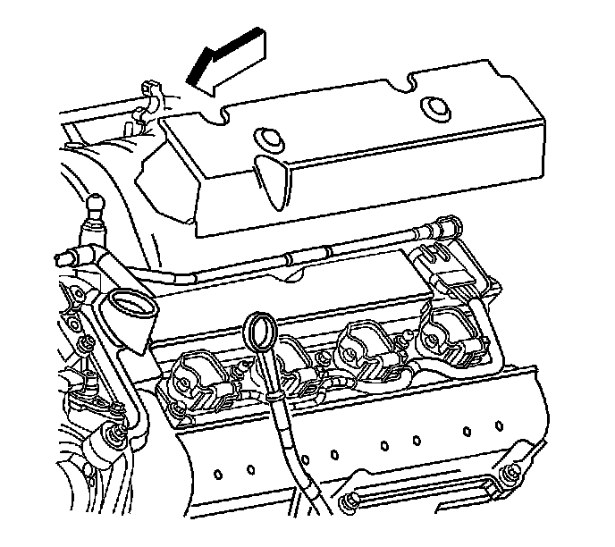
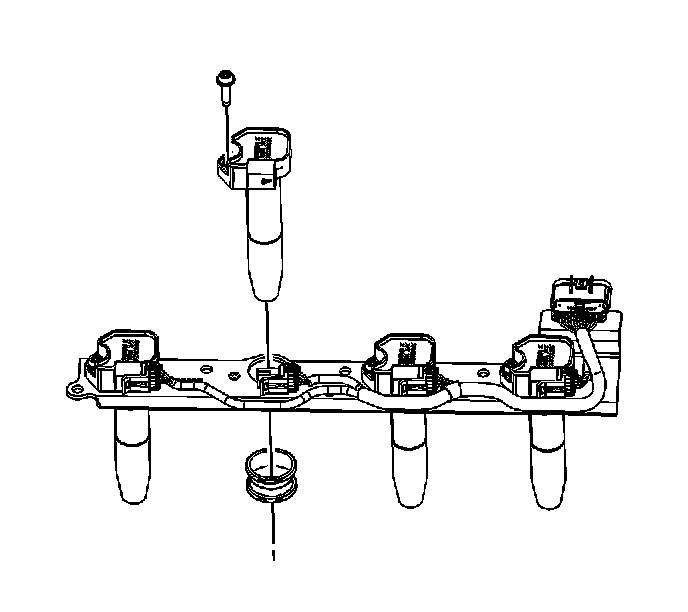

Ignition Coil(s) Replacement - Bank 2
Ignition Coil Replacement - Bank 2
Removal Procedure

1. Remove the fuel injector sight shield. Refer to Fuel Injector Sight Shield Replacement (Service and Repair) .
2. Remove the ignition coil cover from the cam cover by lifting straight up.

3. Disconnect the ignition coil wiring harness electrical connector from the coil that needs to be replaced.
4. Remove the ignition coil retaining bolt.
5. Carefully remove the ignition coil assembly.
Installation Procedure
Important: Ensure that the spark plug seals are in place when installing the ignition coil.
1. Install the ignition coil.
Notice: Refer to Fastener Notice (Fastener Notice) .
2. Install the ignition coil retaining bolt.
Tighten the ignition coil retaining bolt to 10 N.m (89 lb in).
3. Reconnect the ignition coil electrical connector.
4. Install the ignition coil cover to the cam cover.
5. Install the fuel injector sight shield. Refer to Fuel Injector Sight Shield Replacement (Service and Repair) .